行星相对地球的运动：相对轨迹和视轨迹
『地心说』给出的其它行星的轨道就是相对于地球的轨道，是什么样的呢？『地心说』给出的轨道是一个大圆上套一个小圆。实际上呢？由于行星并不完全在一个平面内运行，而是与黄道有个夹角（倾角），轨道就不是二维的，而是三维的。
从地球上看其他行星的轨迹（在天球上的投影）是什么样的呢？就是个圆吗？同样由于行星轨道面与黄道的夹角，导致行星的视运动不完全是一个圆。
Table of Contents
简单推导
在下图中可以推导行星的相对地球的运动关系。采用直角坐标，原点在太阳S，xy平面在黄道面上，x指向春分点。图中蓝色轨道为地球轨道，地球位置在E；红色轨道为行星M的轨道，行星位置在M。行星的轨道都简化为圆。地球轨道半径为1，行星轨道半径为 r，行星轨道的倾角为 i。此时地球E相对春分点的偏转角为 α ，M 在黄道面上的投影为 M'，做 M 到 x 轴的垂线 MD，并做图示的各条辅助线。可知 ∠MDM'=i , 令 ∠MEM'=θ 。
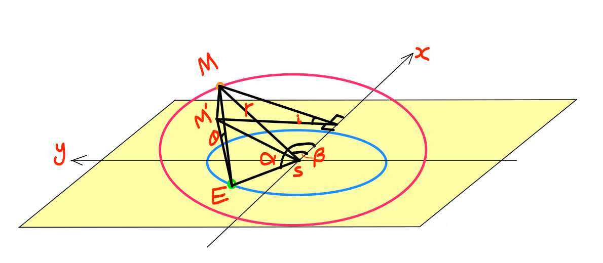
行星与地球的位置关系
由上图可得地球 E 的坐标： \begin{equation} E: x_E=\cos\alpha, y_E=\sin\alpha, z_E=0 \end{equation} 行星 M 的坐标： \begin{equation} M: x_M = r\cos\beta, y_M=r\sin\beta\cos i, z_M=r\sin\beta \sin i \end{equation} 因此可得 M 相对 E 的方位： \begin{equation} \sin\theta = \frac{z_M}{|ME|},\;\; \tan\varphi = \frac{y_M-y_E}{x_M-x_E} \end{equation} θ 和 \varphi 就是 M 在地心黄道坐标系中的经度和纬度，根据这两个值就能画出行星相对地球的视轨迹。而根据 M 和 E 的座标就能得到相对轨道。
各大行星的相对轨道
绘制相对轨道的 python 代码：
from math import sin, cos, asin, atan2, pi
from mpl_toolkits.mplot3d import Axes3D
import matplotlib.pyplot as plt
import numpy as np
def pos(r,i,a,b):
""" """
i *= pi/180.
a *= pi/180.
b *= pi/180.
xe = cos(a)
ye = sin(a)
ze = 0.
xm = r*cos(b)
ym = r*sin(b)*cos(i)
zm = r*sin(i)*sin(b)
return xm-xe, ym-ye, zm-ze
def trace(r, i, t, n):
""" """
x = [0]*(n*360)
y = [0]*(n*360)
z = [0]*(n*360)
for a in xrange(n*360):
b = a/t
x[a],y[a],z[a] = pos(r,i,a,b)
return x,y,z
def plot_trace(r,i,t,n,name='planet'):
""" """
fig = plt.figure()
ax = fig.add_subplot(111, projection='3d')
x,y,z=trace(r,i,t,n)
ax.plot(x,y,z, 'r')
ax.set_zlim(-r*sin(i*pi/180)*1.5, max(0.1,r*sin(i*pi/180)*1.5))
ax.plot([0],[0],[0],'bo')
title = '%s: a=%.2f, i=%.2f, t=%.2f, n=%d'%(name,r,i,t,n)
ax.text2D(0.05, 0.95, title, transform=ax.transAxes)
plt.savefig('img/%s_orbit_3d.png')
fig=plt.figure(figsize=[6,5.1])
plt.plot(x,y)
plt.plot([0],[0],'bo')
plt.title(title)
plt.savefig('img/%s_orbit.png')
def all_orbit():
plot_trace(0.387,7.0,0.24,6,'Mercury')
plot_trace(0.723,3.4,0.63,18,'Venus')
plot_trace(1.52,1.85,1.88,15,'Mars')
plot_trace(5.2,1.3,11.86,25,'Jupiter')
plot_trace(9.54,2.49,29.46,30,'Saturn')
plot_trace(19.19,0.77,84.0,90,'Uranus')
plot_trace(30.,1.77,164.8,170,'Neptune')
all_orbit()
得到各大行星相对地球的轨道。一个是三维空间中的轨迹，但在 z 方向故意放大，以看出在 z 方向上的波动；另外的二维图是轨迹在黄道面上的投影。
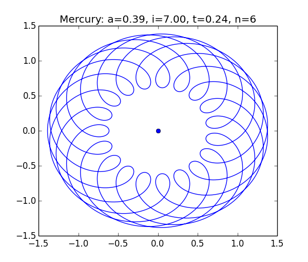
水星相对地球的轨道
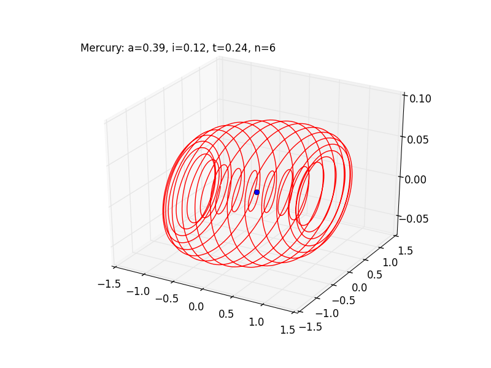
水星相对地球的轨道 3D
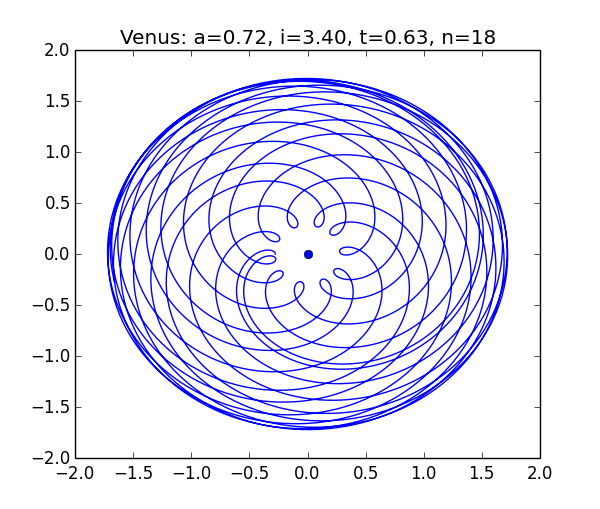
金星相对地球的轨道
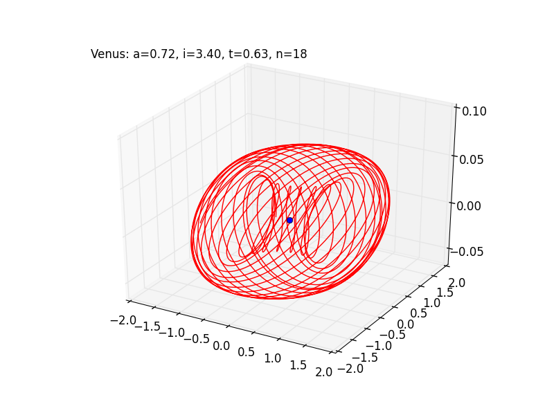
金星相对地球的轨道 3D
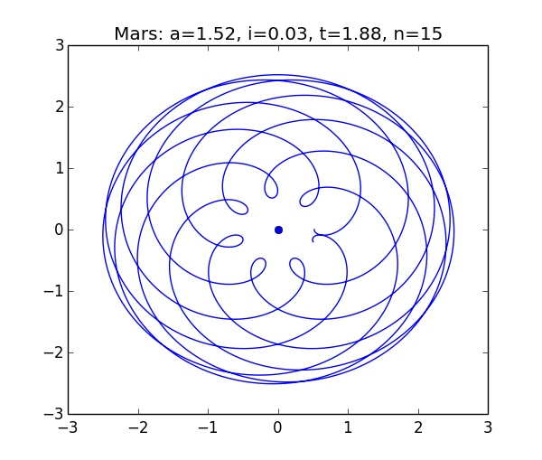
火星相对地球的轨道
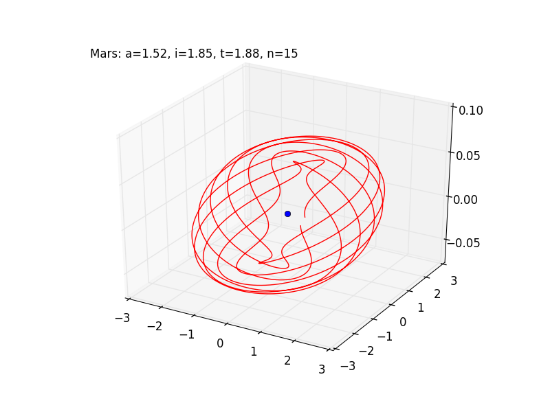
火星相对地球的轨道 3D
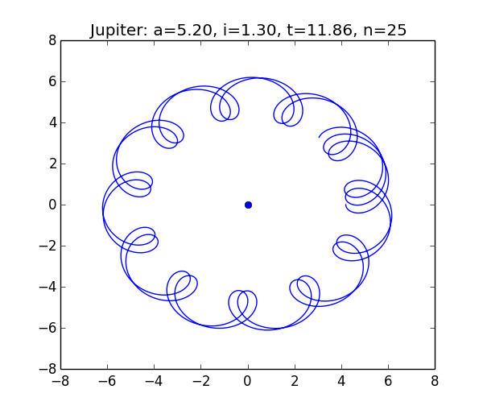
木星相对地球的轨道
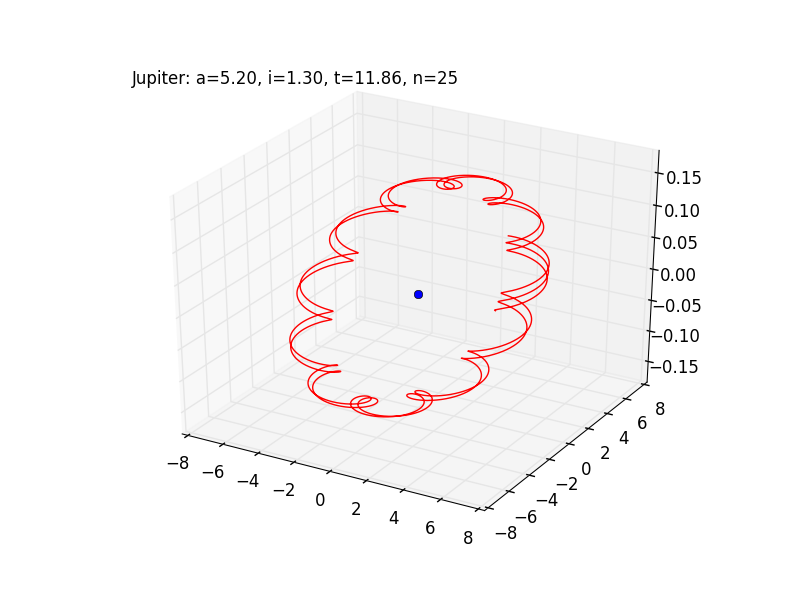
木星相对地球的轨道 3D
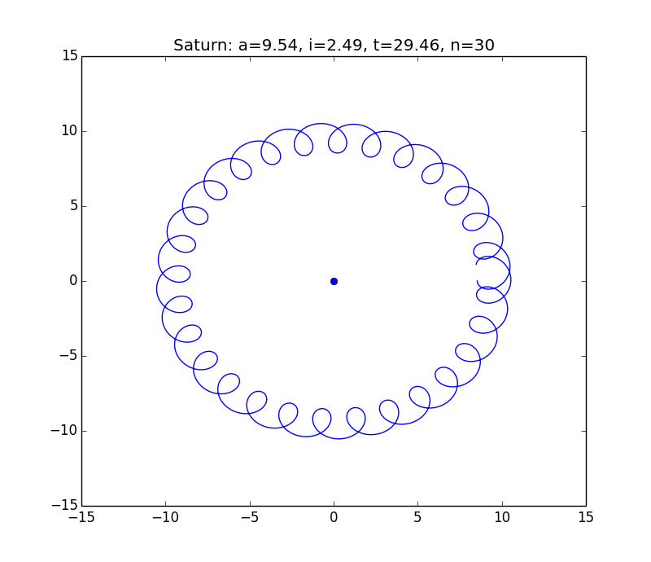
土星相对地球的轨道
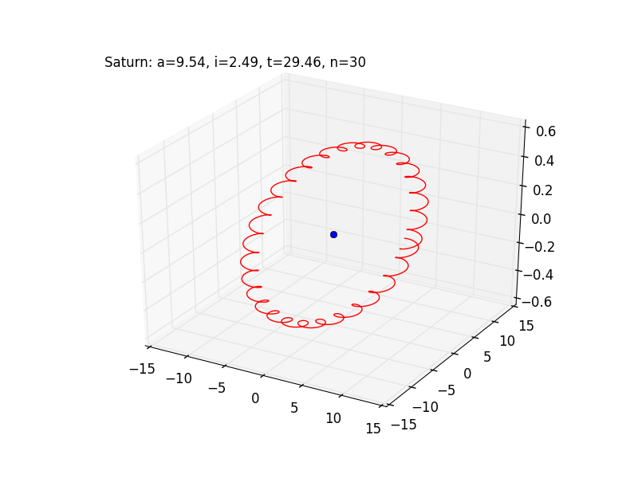
土星相对地球的轨道 3D
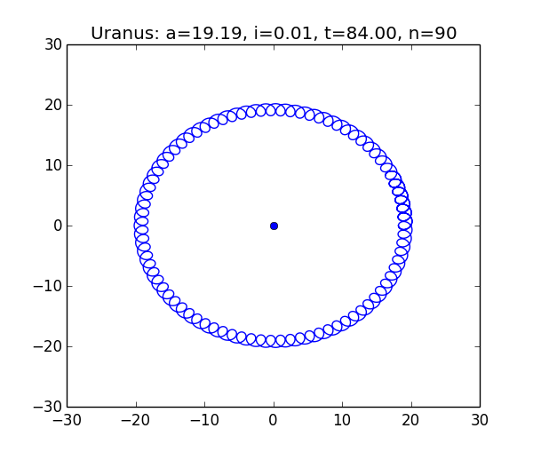
天王星相对地球的轨道
天王星相对地球的轨道 3D
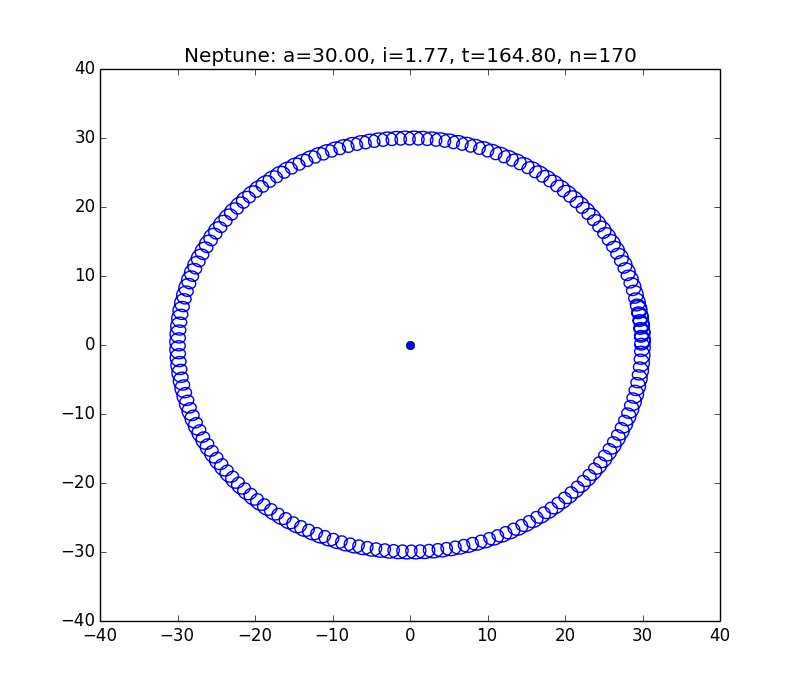
海王星相对地球的轨道
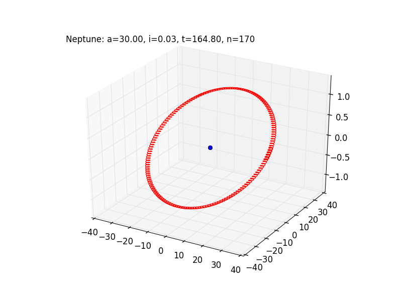
海王星相对地球的轨道 3D
各大行星的相对视轨迹
绘制视轨迹的 python 代码：
from math import sin, cos, asin, atan2, pi
from mpl_toolkits.mplot3d import Axes3D
import matplotlib.pyplot as plt
import numpy as np
def orient(r,i,a,b):
""" """
i *= pi/180.
a *= pi/180.
b *= pi/180.
xe = cos(a)
ye = sin(a)
ze = 0.
xm = r*cos(b)
ym = r*sin(b)*cos(i)
zm = r*sin(i)*sin(b)
rem = ((xe-xm)**2+(ye-ym)**2+zm**2)**0.5
theta = asin(zm/rem)
phi = atan2(ym-ye,xm-xe)
return phi,theta # phi*180/pi,theta*180/pi
def trace(r, i, t, n):
""" """
theta = [0]*(n*360)
phi = [0]*(n*360)
for a in xrange(n*360):
b = a/t
phi[a],theta[a] = orient(r,i,a,b)
return phi,theta
def plot_trace(r,i,t,n,name='planet', out=None, show_sphere=True):
""" """
fig = plt.figure()
ax = fig.add_subplot(111, projection='3d')
if show_sphere:
u = np.linspace(0, 2 * np.pi, 100)
v = np.linspace(0, np.pi, 100)
x = 10 * np.outer(np.cos(u), np.sin(v))
y = 10 * np.outer(np.sin(u), np.sin(v))
z = 10 * np.outer(np.ones(np.size(u)), np.cos(v))
ax.plot_wireframe(x, y, z, rstride=6, cstride=6, color='#a0a0a0')
phi,theta=trace(r,i,t,n)
x = 10*np.cos(theta)*np.cos(phi)
y = 10*np.cos(theta)*np.sin(phi)
z = 10*np.sin(theta)
ax.plot(x,y,z, 'r')
title = '%s: a=%.2f, i=%.2f, t=%.2f, n=%d'%(name,r,i,t,n)
ax.text2D(0.05, 0.95, title, transform=ax.transAxes)
if out is None:
plt.show()
else:
plt.savefig(out)
def all_trace():
plot_trace(0.387,7.0,0.24,2,'Mercury','img/Mercury_motion.png')
plot_trace(0.723,3.4,0.63,3,'Venus','img/Venus_motion.png')
plot_trace(1.52,1.85,1.88,8,'Mars','img/Mars_motion.png')
plot_trace(5.2,1.3,11.86,15,'Jupiter','img/Jupiter_motion.png')
plot_trace(9.54,2.49,29.46,35,'Saturn','img/Saturn_motion.png')
plot_trace(19.19,0.77,84.0,90,'Uranus','img/Uranus_motion.png')
plot_trace(30.,1.77,164.8,180,'Neptune','img/Neptune_motion.png')
all_trace()
得到的各大行星在天球上投影的轨迹如下：
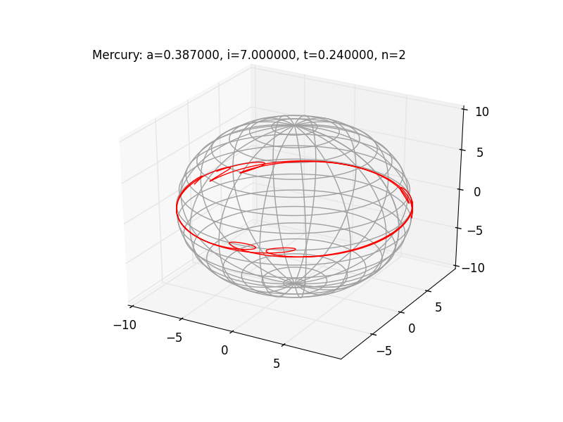
水星相对地球的轨迹
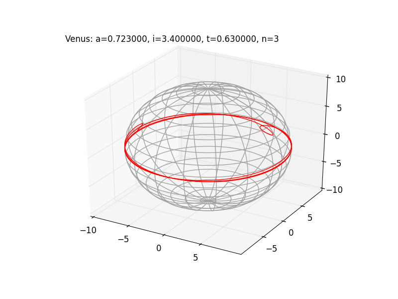
金星相对地球的轨迹
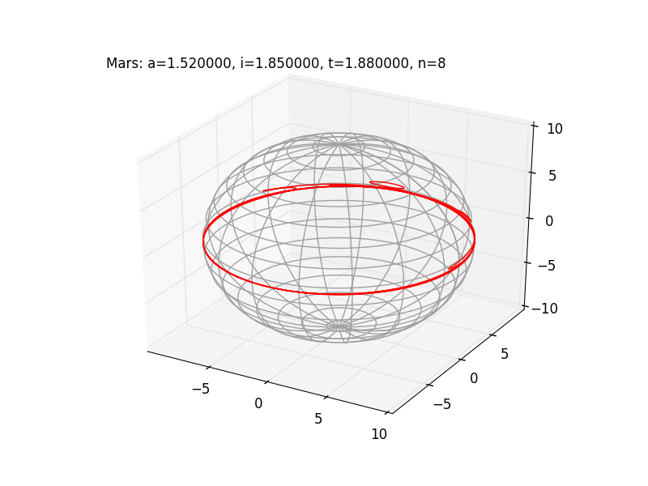
火星相对地球的轨迹
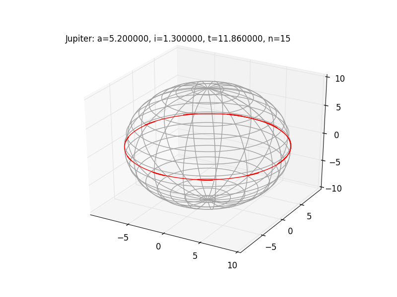
木星相对地球的轨迹
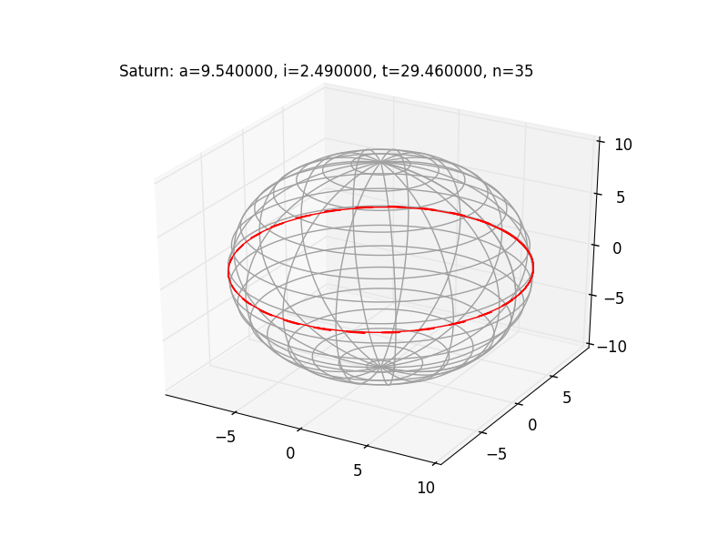
土星相对地球的轨迹
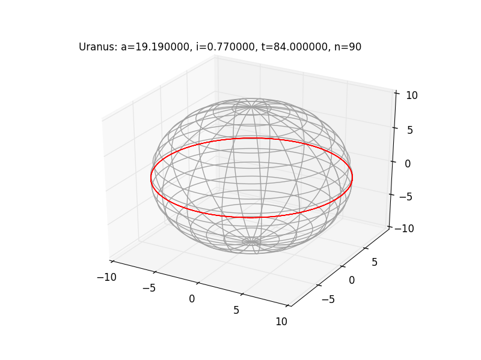
天王星星相对地球的轨迹
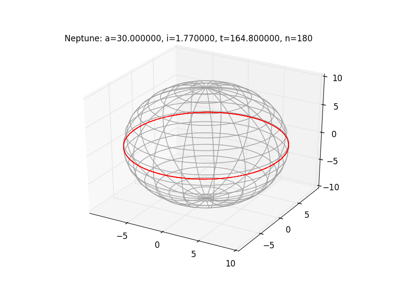
海王星相对地球的轨迹
所以基本上行星相对于地球的轨迹是个大圆，但都有小的起伏，比如把木星的轨迹放大就能看出来。
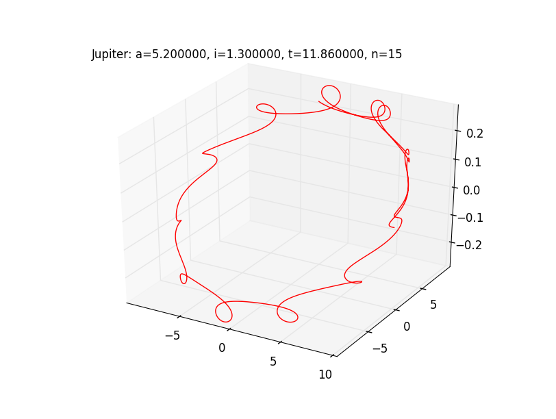
木星相对地球的轨迹（放大）
轨迹的起伏和轨道的倾角有很大关系，倾角越大，则起伏越大。假设火星的倾角变为 30 度，则轨迹为：
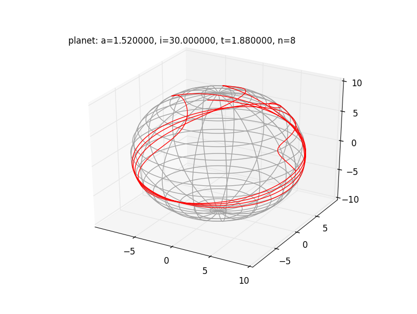
30度倾角的火星相对地球的轨迹